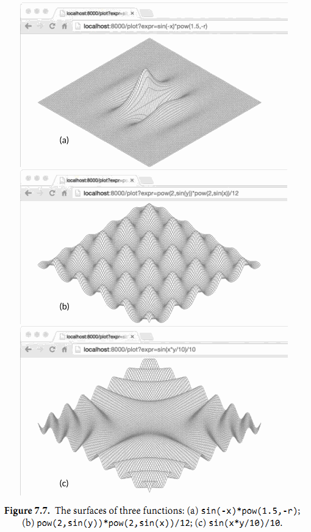

7.9. 示例: 表达式求值
在本节中，我们会构建一个简单算术表达式的求值器。我们将使用一个接口Expr来表示Go语言中任意的表达式。现在这个接口不需要有方法，但是我们后面会为它增加一些。
// An Expr is an arithmetic expression.
type Expr interface{}
我们的表达式语言包括浮点数符号（小数点）；二元操作符+，-，*， 和/；一元操作符-x和+x；调用pow(x,y)，sin(x)，和sqrt(x)的函数；例如x和pi的变量；当然也有括号和标准的优先级运算符。所有的值都是float64类型。这下面是一些表达式的例子：
sqrt(A / pi)
pow(x, 3) + pow(y, 3)
(F - 32) * 5 / 9
下面的五个具体类型表示了具体的表达式类型。Var类型表示对一个变量的引用。（我们很快会知道为什么它可以被输出。）literal类型表示一个浮点型常量。unary和binary类型表示有一到两个运算对象的运算符表达式，这些操作数可以是任意的Expr类型。call类型表示对一个函数的调用；我们限制它的fn字段只能是pow，sin或者sqrt。
gopl.io/ch7/eval
// A Var identifies a variable, e.g., x.
type Var string
// A literal is a numeric constant, e.g., 3.141.
type literal float64
// A unary represents a unary operator expression, e.g., -x.
type unary struct {
op rune // one of '+', '-'
x Expr
}
// A binary represents a binary operator expression, e.g., x+y.
type binary struct {
op rune // one of '+', '-', '*', '/'
x, y Expr
}
// A call represents a function call expression, e.g., sin(x).
type call struct {
fn string // one of "pow", "sin", "sqrt"
args []Expr
}
为了计算一个包含变量的表达式，我们需要一个environment变量将变量的名字映射成对应的值：
type Env map[Var]float64
我们也需要每个表达式去定义一个Eval方法，这个方法会根据给定的environment变量返回表达式的值。因为每个表达式都必须提供这个方法，我们将它加入到Expr接口中。这个包只会对外公开Expr，Env，和Var类型。调用方不需要获取其它的表达式类型就可以使用这个求值器。
type Expr interface {
// Eval returns the value of this Expr in the environment env.
Eval(env Env) float64
}
下面给大家展示一个具体的Eval方法。Var类型的这个方法对一个environment变量进行查找，如果这个变量没有在environment中定义过这个方法会返回一个零值，literal类型的这个方法简单的返回它真实的值。
func (v Var) Eval(env Env) float64 {
return env[v]
}
func (l literal) Eval(_ Env) float64 {
return float64(l)
}
unary和binary的Eval方法会递归的计算它的运算对象，然后将运算符op作用到它们上。我们不将被零或无穷数除作为一个错误，因为它们都会产生一个固定的结果——无限。最后，call的这个方法会计算对于pow，sin，或者sqrt函数的参数值，然后调用对应在math包中的函数。
func (u unary) Eval(env Env) float64 {
switch u.op {
case '+':
return +u.x.Eval(env)
case '-':
return -u.x.Eval(env)
}
panic(fmt.Sprintf("unsupported unary operator: %q", u.op))
}
func (b binary) Eval(env Env) float64 {
switch b.op {
case '+':
return b.x.Eval(env) + b.y.Eval(env)
case '-':
return b.x.Eval(env) - b.y.Eval(env)
case '*':
return b.x.Eval(env) * b.y.Eval(env)
case '/':
return b.x.Eval(env) / b.y.Eval(env)
}
panic(fmt.Sprintf("unsupported binary operator: %q", b.op))
}
func (c call) Eval(env Env) float64 {
switch c.fn {
case "pow":
return math.Pow(c.args[0].Eval(env), c.args[1].Eval(env))
case "sin":
return math.Sin(c.args[0].Eval(env))
case "sqrt":
return math.Sqrt(c.args[0].Eval(env))
}
panic(fmt.Sprintf("unsupported function call: %s", c.fn))
}
一些方法会失败。例如，一个call表达式可能有未知的函数或者错误的参数个数。用一个无效的运算符如!或者<去构建一个unary或者binary表达式也是可能会发生的（尽管下面提到的Parse函数不会这样做）。这些错误会让Eval方法panic。其它的错误，像计算一个没有在environment变量中出现过的Var，只会让Eval方法返回一个错误的结果。所有的这些错误都可以通过在计算前检查Expr来发现。这是我们接下来要讲的Check方法的工作，但是让我们先测试Eval方法。
下面的TestEval函数是对evaluator的一个测试。它使用了我们会在第11章讲解的testing包，但是现在知道调用t.Errof会报告一个错误就足够了。这个函数循环遍历一个表格中的输入，这个表格中定义了三个表达式和针对每个表达式不同的环境变量。第一个表达式根据给定圆的面积A计算它的半径，第二个表达式通过两个变量x和y计算两个立方体的体积之和，第三个表达式将华氏温度F转换成摄氏度。
func TestEval(t *testing.T) {
tests := []struct {
expr string
env Env
want string
}{
{"sqrt(A / pi)", Env{"A": 87616, "pi": math.Pi}, "167"},
{"pow(x, 3) + pow(y, 3)", Env{"x": 12, "y": 1}, "1729"},
{"pow(x, 3) + pow(y, 3)", Env{"x": 9, "y": 10}, "1729"},
{"5 / 9 * (F - 32)", Env{"F": -40}, "-40"},
{"5 / 9 * (F - 32)", Env{"F": 32}, "0"},
{"5 / 9 * (F - 32)", Env{"F": 212}, "100"},
}
var prevExpr string
for _, test := range tests {
// Print expr only when it changes.
if test.expr != prevExpr {
fmt.Printf("\n%s\n", test.expr)
prevExpr = test.expr
}
expr, err := Parse(test.expr)
if err != nil {
t.Error(err) // parse error
continue
}
got := fmt.Sprintf("%.6g", expr.Eval(test.env))
fmt.Printf("\t%v => %s\n", test.env, got)
if got != test.want {
t.Errorf("%s.Eval() in %v = %q, want %q\n",
test.expr, test.env, got, test.want)
}
}
}
对于表格中的每一条记录，这个测试会解析它的表达式然后在环境变量中计算它，输出结果。这里我们没有空间来展示Parse函数，但是如果你使用go get下载这个包你就可以看到这个函数。
go test(§11.1) 命令会运行一个包的测试用例：
$ go test -v gopl.io/ch7/eval
这个-v标识可以让我们看到测试用例打印的输出；正常情况下像这样一个成功的测试用例会阻止打印结果的输出。这里是测试用例里fmt.Printf语句的输出：
sqrt(A / pi)
map[A:87616 pi:3.141592653589793] => 167
pow(x, 3) + pow(y, 3)
map[x:12 y:1] => 1729
map[x:9 y:10] => 1729
5 / 9 * (F - 32)
map[F:-40] => -40
map[F:32] => 0
map[F:212] => 100
幸运的是目前为止所有的输入都是适合的格式，但是我们的运气不可能一直都有。甚至在解释型语言中，为了静态错误检查语法是非常常见的；静态错误就是不用运行程序就可以检测出来的错误。通过将静态检查和动态的部分分开，我们可以快速的检查错误并且对于多次检查只执行一次而不是每次表达式计算的时候都进行检查。
让我们往Expr接口中增加另一个方法。Check方法对一个表达式语义树检查出静态错误。我们马上会说明它的vars参数。
type Expr interface {
Eval(env Env) float64
// Check reports errors in this Expr and adds its Vars to the set.
Check(vars map[Var]bool) error
}
具体的Check方法展示在下面。literal和Var类型的计算不可能失败，所以这些类型的Check方法会返回一个nil值。对于unary和binary的Check方法会首先检查操作符是否有效，然后递归的检查运算单元。相似地对于call的这个方法首先检查调用的函数是否已知并且有没有正确个数的参数，然后递归的检查每一个参数。
func (v Var) Check(vars map[Var]bool) error {
vars[v] = true
return nil
}
func (literal) Check(vars map[Var]bool) error {
return nil
}
func (u unary) Check(vars map[Var]bool) error {
if !strings.ContainsRune("+-", u.op) {
return fmt.Errorf("unexpected unary op %q", u.op)
}
return u.x.Check(vars)
}
func (b binary) Check(vars map[Var]bool) error {
if !strings.ContainsRune("+-*/", b.op) {
return fmt.Errorf("unexpected binary op %q", b.op)
}
if err := b.x.Check(vars); err != nil {
return err
}
return b.y.Check(vars)
}
func (c call) Check(vars map[Var]bool) error {
arity, ok := numParams[c.fn]
if !ok {
return fmt.Errorf("unknown function %q", c.fn)
}
if len(c.args) != arity {
return fmt.Errorf("call to %s has %d args, want %d",
c.fn, len(c.args), arity)
}
for _, arg := range c.args {
if err := arg.Check(vars); err != nil {
return err
}
}
return nil
}
var numParams = map[string]int{"pow": 2, "sin": 1, "sqrt": 1}
我们在两个组中有选择地列出有问题的输入和它们得出的错误。Parse函数（这里没有出现）会报出一个语法错误和Check函数会报出语义错误。
x % 2 unexpected '%'
math.Pi unexpected '.'
!true unexpected '!'
"hello" unexpected '"'
log(10) unknown function "log"
sqrt(1, 2) call to sqrt has 2 args, want 1
Check方法的参数是一个Var类型的集合，这个集合聚集从表达式中找到的变量名。为了保证成功的计算，这些变量中的每一个都必须出现在环境变量中。从逻辑上讲，这个集合就是调用Check方法返回的结果，但是因为这个方法是递归调用的，所以对于Check方法，填充结果到一个作为参数传入的集合中会更加的方便。调用方在初始调用时必须提供一个空的集合。
在第3.2节中，我们绘制了一个在编译期才确定的函数f(x,y)。现在我们可以解析，检查和计算在字符串中的表达式，我们可以构建一个在运行时从客户端接收表达式的web应用并且它会绘制这个函数的表示的曲面。我们可以使用集合vars来检查表达式是否是一个只有两个变量x和y的函数——实际上是3个，因为我们为了方便会提供半径大小r。并且我们会在计算前使用Check方法拒绝有格式问题的表达式，这样我们就不会在下面函数的40000个计算过程（100x100个栅格，每一个有4个角）重复这些检查。
这个ParseAndCheck函数混合了解析和检查步骤的过程：
gopl.io/ch7/surface
import "gopl.io/ch7/eval"
func parseAndCheck(s string) (eval.Expr, error) {
if s == "" {
return nil, fmt.Errorf("empty expression")
}
expr, err := eval.Parse(s)
if err != nil {
return nil, err
}
vars := make(map[eval.Var]bool)
if err := expr.Check(vars); err != nil {
return nil, err
}
for v := range vars {
if v != "x" && v != "y" && v != "r" {
return nil, fmt.Errorf("undefined variable: %s", v)
}
}
return expr, nil
}
为了编写这个web应用，所有我们需要做的就是下面这个plot函数，这个函数有和http.HandlerFunc相似的签名：
func plot(w http.ResponseWriter, r *http.Request) {
r.ParseForm()
expr, err := parseAndCheck(r.Form.Get("expr"))
if err != nil {
http.Error(w, "bad expr: "+err.Error(), http.StatusBadRequest)
return
}
w.Header().Set("Content-Type", "image/svg+xml")
surface(w, func(x, y float64) float64 {
r := math.Hypot(x, y) // distance from (0,0)
return expr.Eval(eval.Env{"x": x, "y": y, "r": r})
})
}

这个plot函数解析和检查在HTTP请求中指定的表达式并且用它来创建一个两个变量的匿名函数。这个匿名函数和来自原来surface-plotting程序中的固定函数f有相同的签名，但是它计算一个用户提供的表达式。环境变量中定义了x，y和半径r。最后plot调用surface函数，它就是gopl.io/ch3/surface中的主要函数，修改后它可以接受plot中的函数和输出io.Writer作为参数，而不是使用固定的函数f和os.Stdout。图7.7中显示了通过程序产生的3个曲面。
练习 7.13： 为Expr增加一个String方法来打印美观的语法树。当再一次解析的时候，检查它的结果是否生成相同的语法树。
练习 7.14： 定义一个新的满足Expr接口的具体类型并且提供一个新的操作例如对它运算单元中的最小值的计算。因为Parse函数不会创建这个新类型的实例，为了使用它你可能需要直接构造一个语法树（或者继承parser接口）。
练习 7.15： 编写一个从标准输入中读取一个单一表达式的程序，用户及时地提供对于任意变量的值，然后在结果环境变量中计算表达式的值。优雅的处理所有遇到的错误。
练习 7.16： 编写一个基于web的计算器程序。